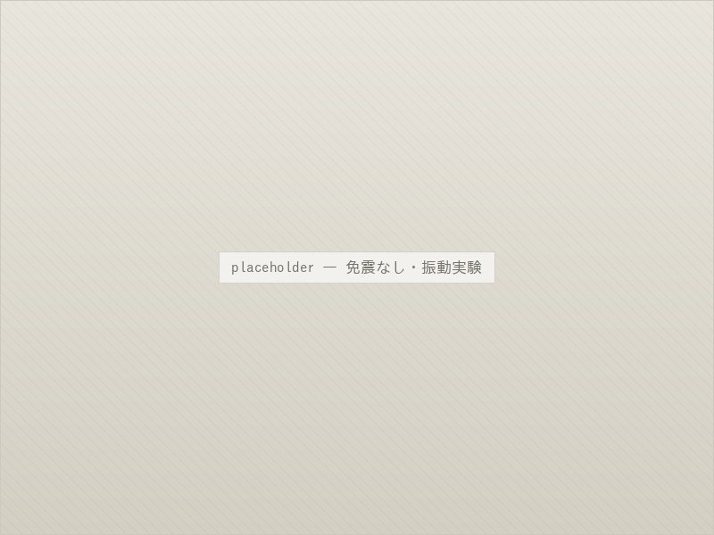
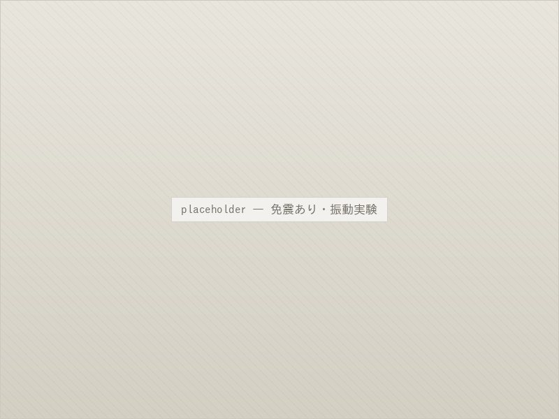

地震対策
揺れを固めずに、
受け流して元に戻す。
— About
免震ゲルとは
お墓は複数の石を積み上げて建てられているため、大きな地震では上に載った石がずれたり、倒れたりすることがあります。免震ゲルは、その石と石の接合部に挟み込む、粘着性の高いゲル状のパットです。
揺れが伝わるとゲルが伸び縮みして力を吸収し、石がずれようとする動きをその場に引き戻します。接着剤のように固めてしまうのではなく、あえて動きを許しながら元の位置に戻すという考え方で、石を割らずに倒壊を防ぎます。
新しくお墓を建てる際はもちろん、すでに建っているお墓にも後から施工できます。
— 01 / Test
振動実験による確認
免震ゲルの効果は、実物大の墓石を振動台に載せた実験で確認されています。地震波を再現した振動台の上に、免震ゲルを施工したお墓と施工していないお墓を並べ、同じ揺れを与えて比べる試験です。
震度7相当の揺れを加えたところ、施工していないお墓は上部の石がずれて崩れたのに対し、免震ゲルを施工したお墓は大きくは崩れず、その場にとどまることが確認されました。カタログ上の数値ではなく、実物大での試験にもとづいた工法です。


ご注意
実験の条件によって結果は異なります。免震施工はお墓の被害を軽くするためのもので、
いかなる地震でも無傷であることを保証するものではありません。
— 02 / Process
施工の流れ
- 1．現地調査
- お墓の大きさ、石の構成、目地の状態を確認し、必要な施工箇所を判断します。
- 2．石の取り外し
- 竿石・上台・中台などを順に慎重に取り外します。既存の目地は丁寧に除去します。
- 3．免震ゲルの設置
- 接合面を清掃・乾燥させたうえで、所定の位置に免震ゲルを貼り付けます。
- 4．据え直し・仕上げ
- 水平を確認しながら石を据え直し、目地を打ち直して仕上げます。
— 03 / Price
施工費用の考え方
費用はお墓の大きさ、石の段数、墓地までの搬入経路などによって変わります。現地を確認したうえで、正式なお見積もりをお出しします。
- 新規建立とあわせて
- お墓を新しく建てる工程のなかで施工するため、追加の費用はもっとも抑えられます。お見積もり時にあわせてご提示いたします。
- 既存のお墓に施工
- 石の取り外し・据え直し・目地の打ち直しを含みます。石の大きさと段数、現地の作業条件によって変わります。
- 他の工事とあわせて
- クリーニングやリフォームとあわせてご依頼いただくと、石の上げ下ろしが一度で済むため費用を抑えられます。
— 04 / Works
免震施工の施工例

新規と同時 / 久我山01

既存墓に施工 / 杉並02

ゲルの設置 / 練馬03

洗浄と同時 / 三鷹04